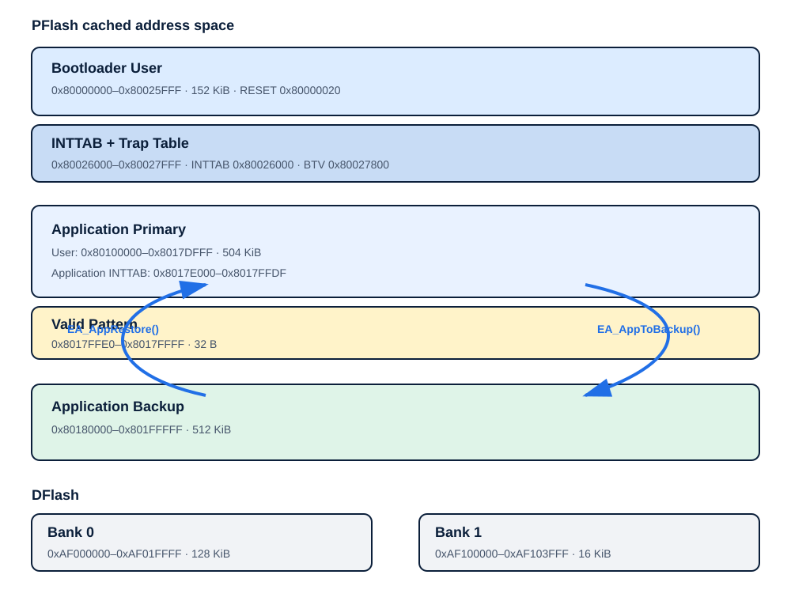
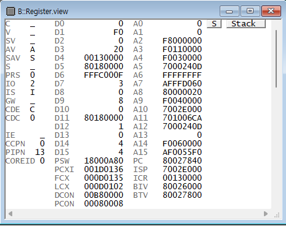

Logical Memory Redundancy, Secure Flash 1.0, Reprogramming Log Analysis, Aligned Memory Access Error 개인 프로젝트 로그를 기준으로 작성했습니다.
BOOTLOADER EVIDENCE
OTA Bootloader 근거 자료
메모리 구획, UDS 리프로그래밍 시퀀스, 테스트 케이스별 근거 수준, Trace32 기반 Alignment Trap 분석을 한 페이지에 모았습니다. 주소값·함수명·코드는 개인 프로젝트에서 실제로 사용한 값 그대로입니다.
OVERVIEW
시스템 구조와 리프로그래밍 흐름
Tester → CAN·ISO-TP → BswCom → BswDcm → RTE → ECU Abstraction → MCAL → PFlash·DFlash
Programming Session · DiagnosticSessionControl(0x10) → SecurityAccess(0x27) → Erase·Backup · RoutineControl(0x31) → RequestDownload(0x34) → TransferData(0x36) → RequestTransferExit(0x37) → SHA-256 확인 → ECUReset(0x11)
핵심 구현
- Application Primary를 Backup 영역으로 복사
- Primary Erase 후 신규 SW Binary 기록
valid pattern과 SHA-256 결과로 실행 가능 여부 판정- 검사 실패 시 Backup을 Primary로 복구
- TransferData의 Block Sequence와 재시도 실패 정책 처리
MEMORY MAP
AURIX TC234LP Bootloader의 PFlash·DFlash 구획과 Backup·Restore 방향을 실제 링커 주소로 정리했습니다.

영역 정의
| 영역 | 주소 범위 | 크기 | 용도 | 관련 함수·심볼 |
|---|---|---|---|---|
| Bootloader User | 0x80000000–0x80025FFF | 152 KiB | Bootloader 코드와 BMHD 인접 영역, 실행 시작점 0x80000020 | RESET |
| Bootloader INTTAB·Trap | 0x80026000–0x80027FFF | 8 KiB | 인터럽트 벡터 및 Trap Table | INTTAB 0x80026000, BTV 0x80027800 |
| Application Primary | 0x80100000–0x8017DFFF | 504 KiB | 현재 실행 대상 Application Binary | MEMORY_ADDRESS_APPLICATION, EA_AppToBackup() |
| Application INTTAB | 0x8017E000–0x8017FFDF | 8 KiB - 32 B | Application 벡터 영역 | pflash_app_inttab |
| Valid Pattern | 0x8017FFE0–0x8017FFFF | 32 B | 리프로그래밍 완료·실행 가능 상태 표시 | pflash_app_valid |
| Application Backup | 0x80180000–0x801FFFFF | 512 KiB | 업데이트 전 Application 보존 및 실패 복구 | EA_AppToBackup(), EA_AppRestore() |
| DFlash Bank 0 | 0xAF000000–0xAF01FFFF | 128 KiB | 비휘발성 상태·로그 저장 후보 영역 | dflash0 |
| DFlash Bank 1 | 0xAF100000–0xAF103FFF | 16 KiB | 비휘발성 보조 영역 | dflash0 |
근거
#define INTTAB 0x80026000
#define RESET 0x80000020
#define IFXTRAPTAB (INTTAB + 0x1800)
memory pflash_app_valid {
size = 32;
map cached(dest_offset=0x8017FFE0, size=32);
}
memory pflash_app_backup {
size = 512k;
map cached(dest_offset=0x80180000, size=512k);
}Bootloader 링크 설정에서 Application과 Backup은 reserved rom으로 선언되어 Bootloader 코드가 해당 영역에 배치되지 않습니다. SHA-256은 이 프로젝트에서 Binary 변경 여부를 판단하는 무결성 검사로 사용했습니다.
UDS SEQUENCE
UDS 7개 서비스, Application Backup, Binary 무결성 판정과 실패 Restore 경로를 계층 호출과 함께 보여줍니다.

서비스 순서
| 순서 | 서비스 | 핵심 처리 | 실패 정책 |
|---|---|---|---|
| 1 | 0x10 DiagnosticSessionControl | Programming Session 진입 | 세션 조건 불충족 시 요청 거부 |
| 2 | 0x27 SecurityAccess | 보호된 Programming 서비스 접근 | 인증 단계 실패 시 Download 금지 |
| 3 | 0x31 RoutineControl | EA_AppToBackup() 후 RID_EraseMemory 실행 | Backup 실패 시 Primary Erase 금지 |
| 4 | 0x34 RequestDownload | 주소·길이와 전송 상태 초기화 | 형식·범위 오류 NRC |
| 5 | 0x36 TransferData | Block Sequence 검사, Binary 기록, SHA-256 누적 | 순서 불일치·Write 오류 시 중단 |
| 6 | 0x37 RequestTransferExit | 전송 종료와 최종 무결성 판정 | SHA-256 불일치 시 valid 처리 금지 |
| 7 | 0x31 RID_CheckProgrammingDependencies | 프로젝트 구현의 의존성 확인 분기 | 공개 자료에는 확인 가능한 검사만 기재 |
| 8 | 0x11 ECUReset | 성공 또는 복구 정책 완료 후 Reset | 미완료 상태에서 Application Jump 금지 |
RoutineControl 실제 정의
#define RID_CheckProgrammingDependencies 0x0001u
#define RID_EraseMemory 0x0002u
#define RCOR_EraseMemory_App 0xF001u
31 01 00 02 F0 01
| | |-----| |---|
SID RID RCOR
BswDcm
→ Rte_Call_BswDcm_rEcuAbsFls_erasePflashBlock()
→ REoiEcuAbs_pEcuAbsFls_erasePflashBlock()
→ EA_erasePflashBlock()SHA-256 불일치 시 Application을 valid 상태로 처리하지 않고 EA_AppRestore()로 Backup을 Primary에 복원한 뒤 read-back·무결성 재검증을 수행하는 구조입니다.
TEST RESULTS
Bootloader 정상·실패·복구 시나리오를 실제 근거 수준에 따라 PASS, Not executed, Evidence unavailable로 구분했습니다.
PASS는 실행 로그, 코드·메모리 비교 또는 명시적 프로젝트 기록이 있을 때만 사용했습니다. 실행하지 않은 항목은 Not executed, 수행 주장은 있으나 공개 근거가 부족한 항목은 Evidence unavailable로 분리했습니다.
검증 범위
- 정상 UDS 다운로드 및 TransferExit 완료
- Block Sequence 불일치와 전송 중단 처리
- 변조 Binary의 SHA-256 불일치 판정
- Application 무효 시 Backup Restore 수행
- Reset 이후 실행 경로와 저장 데이터 확인
테스트 케이스·결과
| ID | 검증 목적 | 사전 조건 | 입력·절차 | 기대 결과 | 실제 결과 | 판정 | 증거 |
|---|---|---|---|---|---|---|---|
| BL-TC-01 | 정상 리프로그래밍 | Programming Session·SecurityAccess 완료 | 0x34→0x36→0x37 순서로 정상 Binary 전송 | 전송 완료, Binary 기록, 종료 응답 | 개인 프로젝트 리프로그래밍 로그에 정상 종료 기록 | PASS | 근거 보기 |
| BL-TC-02 | Block Sequence 불일치 | TransferData 진행 중 | 예상 번호와 다른 Block Sequence 요청 | NRC 후 전송 상태 유지 또는 중단 | 처리 로직은 기록됐으나 공개 가능한 실행 화면 없음 | Evidence unavailable | 근거 보기 |
| BL-TC-03 | TransferData 길이 초과 | Download 범위 설정 완료 | 허용 길이를 넘는 데이터 요청 | 길이·범위 오류로 거부 | 별도 실행 기록을 확인하지 못함 | Not executed | 근거 보기 |
| BL-TC-04 | 전송 중단과 Valid Pattern | 기존 Application Backup 완료 | 리프로그래밍 중단 후 Reset | Invalid Pattern 감지, 신규 App Jump 금지 | Pattern 불일치 시 중단 상태로 판단하는 로직 기록 | PASS | 근거 보기 |
| BL-TC-05 | 변경 Binary SHA-256 불일치 | 변조 Binary 준비 | Hash 갱신 없이 Binary 변경 후 전송 | storedHash와 calcHash 불일치, Restore 분기 | Secure Flash 1.0 기록에서 불일치·복구 호출 확인 | PASS | 근거 보기 |
| BL-TC-06 | Primary→Backup | 정상 Application 존재 | EA_AppToBackup() 실행 | Secondary Erase 후 chunk 단위 복사 | 코드와 프로젝트 실행 결과에서 Backup 흐름 확인 | PASS | 근거 보기 |
| BL-TC-07 | 무결성 실패 후 Restore | Backup 유효, 신규 Binary 불일치 | EA_AppRestore() 실행 | Primary Erase 후 Backup 복원 | Restore 코드·양방향 재검증 기록 확인 | PASS | 근거 보기 |
| BL-TC-08 | Restore 후 Application 실행 | Restore 완료 | Reset 후 Application 실행 경로 확인 | 복원 Application 정상 진입 | 별도 공개 실행 화면 없음 | Evidence unavailable | 근거 보기 |
| BL-TC-09 | 비정렬 버퍼 오류 재현 | RoutineControl Erase/Backup 요청 | uint8 copyBuf로 FlsLoader_Write() | Alignment Trap 또는 응답 중단 재현 | CAN 응답 중단과 Trace32 조사 기록 확인 | PASS | 근거 보기 |
| BL-TC-10 | 4바이트 정렬 수정 회귀 | uint32 backing buffer 적용 | Primary↔Backup Write·Read 반복 | Trap 없이 복사 및 SHA-256 판정 완료 | 수정 후 양방향 Write·Read 재검증 기록 | PASS | 근거 보기 |
근거 범위
연결된 Notion의 첨부 이미지는 만료형 URL이므로 직접 게시하지 않았습니다. 허위 화면을 재생성하지 않고 주소·함수·코드·관찰 결과를 텍스트로 공개합니다.
| 개인 기록 | 공개한 내용 | 형태 |
|---|---|---|
| Logical Memory Redundancy | EA_AppToBackup(), EA_AppRestore(), Valid Pattern | 코드·흐름 |
| Secure Flash 1.0 | 변경 Binary와 SHA-256 불일치 | 결과 요약 |
| Aligned Memory Access Error | PC·BTV·Breakpoint·정렬 수정 | Trace32 Case Study |
TRACE32 · RESTORE
SID 0x31 RoutineControl 처리 중 발생한 CAN 응답 중단을 Trace32의 함수 Breakpoint, Register·Variable View와 DMI Trap 정보로 추적했습니다. copyBuf, A5, DEADD가 동일한 비정렬 주소 0x7000240D를 가리키는 것을 확인해 FlsLoader_Write() source buffer의 4바이트 정렬 위반을 원인으로 특정했습니다.
Trace32 디버깅 흐름
- 1. 증상
SID 0x31 RoutineControl의RCOR_EraseMemory_App처리에서EA_AppToBackup()호출 이후 ECU의 CAN 응답이 중단됐습니다. - 2. 함수 Breakpoint
Break.Set EA_AppToBackup후 함수 진입과FlsLoader_Write()인수를 추적했습니다. - 3. Source address 확인Variable View의
copyBuf와 RegisterA5가 모두0x7000240D를 가리키는 것을 확인했습니다. - 4. Alignment Trap 확인DMI에서
ALN Error와DEADD = 0x7000240D를 확인해 오류 주소를 교차 검증했습니다. - 5. Trap Vector 포착
Break.Set 0x80027800++0xFF /Program /Onchip적용 후BTV = 0x80027800,PC = 0x80027840상태를 확인했습니다. - 6. 원인
static uint8 copyBuf[]의 실제 배치가 Flash Loader의 4바이트 source buffer 정렬 조건을 충족하지 못한 것으로 특정했습니다. - 7. 수정·재검증
uint32backing array와uint8*view를 적용한 뒤 Application→Backup→Application 양방향 Write·Read와 SHA-256 판정을 다시 수행했습니다.
실제 디버깅 근거
아래 화면은 실제 프로젝트 수행 중 CANoe와 Trace32에서 수집했습니다. UDS 요청·응답, 함수 인수, Register, Variable View와 DMI 상태를 함께 비교해 Memory Alignment Error의 발생 주소와 원인을 확인했습니다.

UDS 응답 흐름
DiagnosticSessionControl(0x10), SecurityAccess(0x27), RoutineControl(0x31)의 요청·응답과 중단 구간을 확인했습니다.

Source address 추적
copyBuf 시작 주소와 A5, Trace32 오류 표시가 0x7000240D로 일치했습니다.

DMI Trap 분석
ALN Error와 DEADD = 0x7000240D를 확인해 정렬 위반 주소를 교차 검증했습니다.

Trap Vector Breakpoint
BTV = 0x80027800, PC = 0x80027840을 확인해 Trap Vector 범위 진입을 직접 포착했습니다.
정렬 수정 전후 코드
수정 전
static uint8 copyBuf[MEMORY_COPY_CHUNK_SIZE];
memcpy(copyBuf,
(const void *)(MEMORY_ADDRESS_APPLICATION + offset),
copySize);
*errorResult = (uint8)FlsLoader_Write(
MEMORY_ADDRESS_BACKUP + offset,
copySize,
copyBuf);수정 후 핵심
static uint32 copyBufAligned[
MEMORY_COPY_CHUNK_SIZE / sizeof(uint32)
];
uint8 *copyBuf = (uint8 *)copyBufAligned;
/* uint32 backing storage: 4-byte alignment
* uint8* view: byte-wise memcpy compatibility */Backup·Restore 재검증
| 방향 | Erase | Source | Destination | 검증 |
|---|---|---|---|---|
| Application Primary → Backup | PFLASH_AREA_APPICATION_SECONDARY | MEMORY_ADDRESS_APPLICATION + offset | MEMORY_ADDRESS_BACKUP + offset | Write return, read-back, SHA-256 |
| Backup → Application Primary | PFLASH_AREA_APPICATION_PRIMARY | MEMORY_ADDRESS_BACKUP + offset | MEMORY_ADDRESS_APPLICATION + offset | Write return, read-back, SHA-256 |
정렬 수정 후 Application Primary→Backup(EA_AppToBackup())과 Backup→Application Primary(EA_AppRestore()) 양방향 Flash Write·Read, UDS 응답 흐름과 SHA-256 판정을 다시 확인했습니다.
CODE REVIEW
기능 동작으로 끝내지 않고 완성된 C/H를 다시 읽어 입력 경계와 검증 순서를 점검했습니다. 아래는 스스로 찾아 문서화한 결함입니다.
- Critical ·
TransferData길이 상한 미강제 —RequestDownload가 광고한 블록 길이는 514바이트지만transferData()는diagDataLengthRx < 3만 거부합니다. ISO-TP First Frame은 12bit 길이 필드로 최대 4,095바이트를 선언할 수 있어, 재조립 경로가 이를 그대로 넘기면 514바이트 버퍼에 최대 3,579바이트를 넘겨 쓸 수 있습니다. - 신뢰 경계 ·
valid pattern기록 순서 —RequestTransferExit에서 SHA-256 검증 전에 valid pattern을 기록합니다. 검증에 성공한 뒤에 기록하도록 순서를 바꿔야 합니다. - ISO-TP 재조립 — 실제 DLC, First Frame 전체 길이, Consecutive Frame 순번과 누적 길이 경계 검사가 없습니다.
- 권한 검사 ·
EraseMemory— 정확한 요청 길이, Programming Session, SecurityAccess, physical request를 확인하지 않고 Primary를 삭제합니다. - 보안 방식 — 고정 Seed/Key와 고정 키 접두어 SHA-256을 사용합니다. 보호된 키 기반 HMAC 또는 전자서명 검토가 필요합니다.
이 항목들은 게시된 소스를 정적으로 검토해 확인한 것이며, 개선안을 실제로 구현·빌드·ECU에서 검증한 결과가 아닙니다. 교육 당시 snapshot은 무결성 비교를 위해 수정하지 않고 보존했습니다.